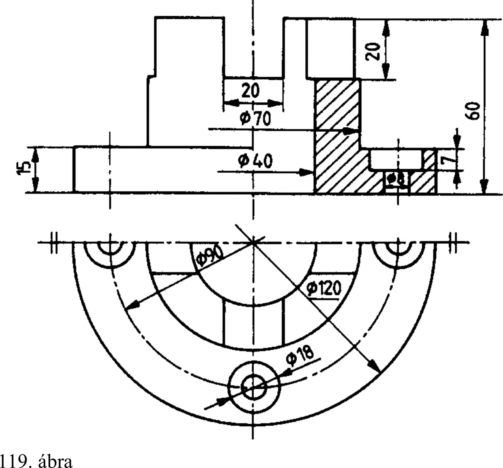

6. Metszeti ábrázolás 6.2.4. A félmetszet Szimmetrikus alkatrészek nézeti és metszeti vetületeinek fele egyesíthető egy vetületben. Ábrázoláskor a két félvetületet elválasztó vonal a vetület vékony pontvonallal megrajzolt szimmetriatengelye. Ha az egyértelmű rajzi ábrázolást nem zavarja, szimmetrikus alkatrészekről rajzolhatunk félvetületet is a 119. ábra szerint. Félmetszet rajzolható függőleges és vízszintes tengelyű munkadarabokról, a metszeti és nézeti oldal elhelyezkedése tetszőleges (120. ábra). Nem kerülhet a szimmetriatengely helyére nézetben vagy metszetben látható nézetvonal (121. ábra). A szimmetriatengelybe eső nézetvonal esetén törésvonal választja el egymástól a nézethez, ill. metszethez tartozó részeket (122. ábra). Összeállítási rajz is készíthető félnézet-félmetszetben (123. ábra). Félmetszetben is alkalmazható a síkfelület jelzése (124. ábra). 6.2.5. A kitörés A nézetben ábrázolt tárgy meghatározott részét metszetben lehet ábrázolni akkor, ha teljes vagy félmetszet megrajzolása nem szükséges. A kitörésben megadott részmetszetet folytonos vékony, szabadkézi törésvonallal vagy folytonos vékony, egyenes törésvonallal kell határolni (125. ábra). < \. 125. ábra Hibás rajz 121. ábra 35
